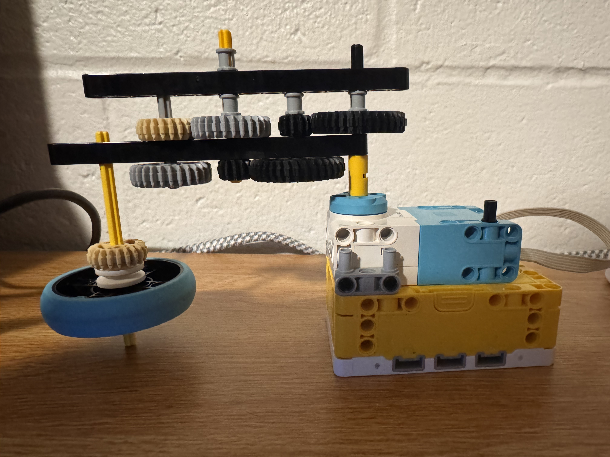

The goal for this project was to get a top to spin for as long as possible. Taking what we learnt in class, I designed a gear train that had a 1 to 17.6 gear ratio attached to the high torque motor to increase the angular velocity of the top. Some of the problems I faced included the gear train spinning on itself because of the high torque of the motor and the lack of additional structure to hold it in place. The top was also difficult to get to release since it was rotating so fast it made it difficult to get the top to drop cleanly onto thne table.